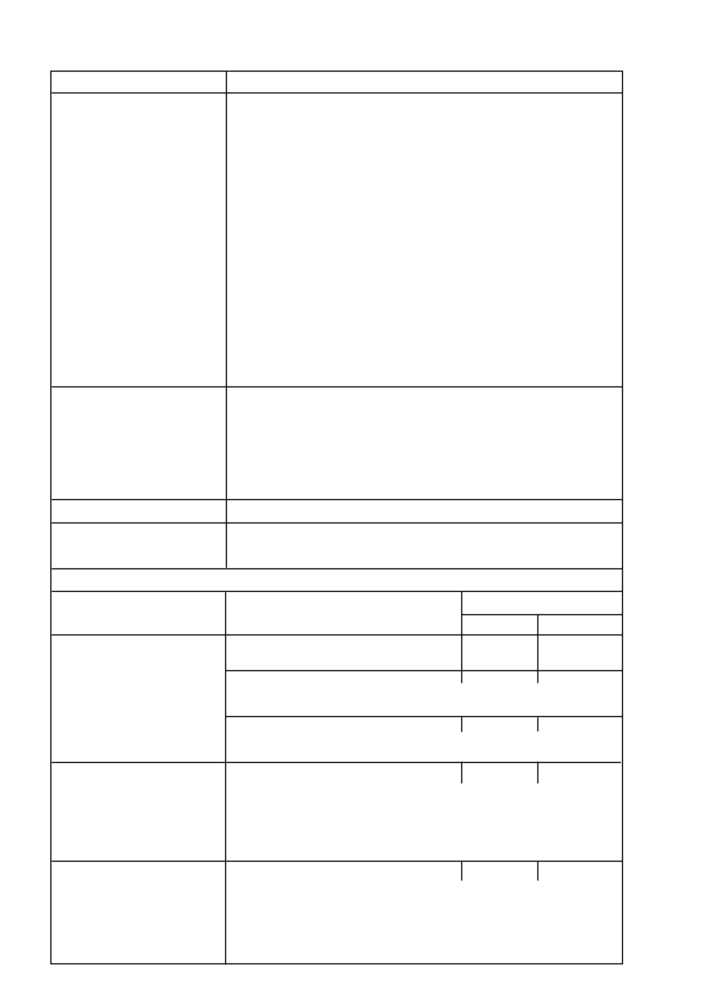

GEWASSE
3.1
Algemeen
Aalwyn
Hops
Olywe
Turksvy
Sagtevrugte
Appels, Appelkose
Kweper
Nektariens
Perskes, Pere, Pruime,
Pruimedante
Sub tropiese vrugte
Avocado’s
Granadella
Kiwivrug, Koejawels, Koffie
Lietstjies
Mango’s
Papaja, Pynappels
Sitrus,
Tee.
Neut en bessie vrugte
Amandels,
Swartbessie,
Kersies,
Makadamias,
Pekanneute
3.2
Wingerde en vrugtebome
3.3
Sisal
3.4
Bewerkte lande
OPMERKINGS
Verwys na onkruidtabelle vir dosisse van
TOUCHDOWN Forte HITECH
.
Beskerm jong bome met groen bas van direkte bespuiting.
Dien toe voor bot op wingerde ouer as 2 jaar. Jonger wingerde met groen bas moet afgeskerm
word. Rig bespuiting na onkruide.
Moet nie toedien in gesnoeide wingerde of vrugtebome voordat die snoeiwonde behoorlik
geseël het nie.
Dekgewasvernietiging in wingerde:
Vir die beheer van
Avena
spp. (
wildebaardhawer, gewone hawer
), *
Lolium
spp. (
Italiaanse
raaigras, drabok
) en *
Secale
cereale
(
raaigras
), dien
TOUCHDOWN Forte HITECH
toe
teen 0,7
l
/ha. Dien toe 10 dae of langer na snoei maar voor bot.
Toedienings kan in kwekery en volwasse plante gedoen word
Gebruik
TOUCHDOWN Forte HITECH
na-oes van vorige gewas. Moet nie teikenplante voor 6
ure na toediening versteur nie (voor plant van gewasse) en voordat nuwe gewasse opgekom het.
Onkruide moet altyd aktief groeiend wees tydens bespuiting.
TOUCHDOWN Forte HITECH
/ 10
3. SPESIFIEKE GEWAS-AANBEVELINGS:
3.5
Bosbou gebruike
GEWONE NAAM (Common name)
TOEDIENINGSHOEVEELHEID
/ ha
Oplossing
1.
Onkruid beheer in
Acacia mearnsii
(swart wattel) (black wattle)
2
l
- 2,6
l
/ha
1 % - 1,3 %
gevestigde plantasies
Dien toe op jong bome vanaf 0,1 - 2 m hoog.
Solanum mauritianum
(luisboom) (bugweed)
1,3
l
/ha
1 %
Groot bome:
Sny tot 50 cm, laat nuwe groei van ten minste 50 cm toe voor toediening.
Klein boompies:
Dien direk op die blare toe.
Rubus
spp
(braam) (American bramble)
4
l
/ha
2 %
Sny rankgroei in winter. Dien toe wanneer nuwe groei meer as 0,5 m hoog is. Indien hergroei
voorkom, spuit met ‘n 1% oplossing
2.
Voor brande:
Die onkruid populasie sal
bestaan uit beide eenjarige
2,6
l
/ha
1,3 %
Die voorbereiding van ‘n algehele
en meerjarige onkruide
brandbaan of brandstroke.
Verwys na onkruidlys soos vir INDUSTRIËLE
GEBRUIK
‘n Minimum spuitmengsel van 200
l
/ha moet toegedien word wanneer die 1,3% spuitoplossing
gebruik word.
‘n Opvolgbespuiting mag nodig wees om hergroei van sommige hardnekkige onkruide te beheer.
Gebruik 1,3% oplossing op ‘n kolbespuitings basis.
3.
Baan voor bereiding
Die onkruid populasie bestaan uit beide eenjarige en
2,6
l
/ha
1,3 %
vir boomsaailinge
meerjarige onkruide.
Vir sommige van die onkruide
Situasies geskik vir bogemelde
wat beheer word, verwys na onkruid lys soos vir INDUSTRIËLE GEBRUIK.
toedienings sluit in:
a) Natuurlike of onversteurde veld
‘n Minimum
spuitmengsel van 200
l
/ha moet toegedien word wanneer die 1,3% spuitoplossing
b) Hervestiging van plantasie na afkap
gebruik word
.
van bome.
‘n Opvolgbespuiting mag nodig wees om hergroei van sommige hardnekkige meerjarige
on kruide te beheer. Gebruik ‘n 1,3% oplossing op ‘n kolbespuitingsbasis.
